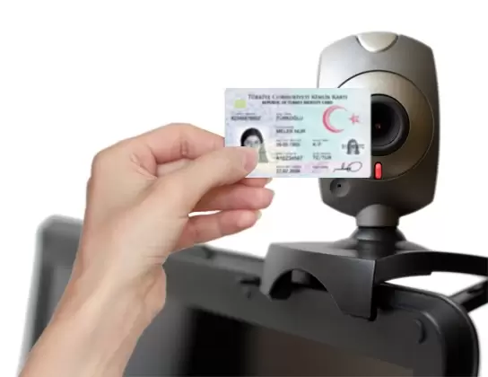

Kimlikokur Kimlik ve Pasaport Okuma Programı
Kimlikokur, dünyadaki tüm kimlik ve pasaportları okuyup tanıyabilen, resim ve metin olarak saklayıp, windows ortamındaki tüm programlara aktarabilen bir yazılımdır.
|
Kimlikokur, otel ve hastane gibi girişte kimlik kaydı yapılması zorunlu tüm kurumlarda kayıt için harcanan zamanı en aza indirip, hatayı ortadan kaldırır; böylece müşteri memnuniyetinizi artırır ve hizmet kalitenizi yükseltir. |
Otellerde Temassız Kimlik OkumaKimlikokur ile ön büronuzda sosyal mesafenizi “Temassız Kimlik Okuma” teknolojisiyle koruyun Misafiriniz kendi kimliğini ya da pasaportunu resepsiyon bilgisayarının web kamerasının önüne tutar. Sistem, fotoğrafı çekilen kimliğin programa aktarılmasını sağlar Temas yok, risk yok… Müşteri memnuniyeti var.. |
 |
KVKK Uyumlu Check-inKimlikokur ile;
|
- Belirli aralıklarla otomatik olarak resim ve data silinebilir.
- Aktarılmış kimliklerin listeden düşmesi ve kimsenin ulaşamaması sağlanabilir.
- Kimlik resimlerinin şifreli olarak saklanması ve sadece Kimlikokur’dan erişilmesi sağlanabilir.
- Kimlik resimlerinin üzerine ‘kopyadır ve misafirin izni alınmıştır’ veya tarafınızdan belirlenecek bir yazı otomatik olarak eklenebilir.
NEDEN KİMLİKOKUR?
Kimlikokur'un teknoljisi, onu benzerlerinden ayıran bir çok üstün özellik sağlar. Bunlardan sadece bir kaçını şöyle özetleyebiliriz;
- Tüm tarayıcılarla çalışması, bir cihaza bağımlı olmaması;
- Tüm ülke pasaportlarını ve çizgi kodlu ülke kimliklerini %100 okuyabilmesi;
- TC Nüfus cüzdanında çok yüksek doğruluk oranına sahip olması;
- İstenilen her türlü programa veri aktarabilmesi;
- Kullanımın çok hızlı ve pratik olması;
- Tarayıcı üzerinden de tek tuşla çalışması;
- Kimliğin tipini, önünü – arkasını otomatik olarak algılaması;
- Yeni kimlik türlerini öğrenebilmesi;
- Aynı anda birden fazla programa entegre olabilmesi;
- Entegre olduğu program içinden tek tuşla(hotkey) çalışabilmesi;
- Sessiz modda, arka planda, görünmeden çalışabilmesi;
- Entegre olduğu programa kimlik bilgileri gibi resmini de aktarabilmesi;
- Veriyi hem forma, hem tabloya hem de bir metin dosyasına eş zamanlı yazabilmesi;
- Seçenekli bilgileri programın istediği seçeneğe çevirerek aktarabilmesi;
- İlki büyük, diğerleri küçük şekilde harf değişimi yapabilmesi;
- Türkçe karekterleri ingilizce’ye çevirebilmesi;
- Kimlik üzerinde bozuk kısımların mouse ile seçilerek okutulabilmesi;
- Toplu girişlerde arka arkaya toplu okuma ve sonradan aktarma yapılabilmesi;
- Kullanıcı tarafından değiştirilebilen dizaynda çıktı vermesi;
- Sınırsız arşivleme yapabilmesi, arşivedeki bilgilere kolayca ulaşım sağlaması;
- Mobil tarayıcılarla çalışabilmesi;
- Dosyadan okuma yapabilmesi;
- Çift taraflı okuyucuları desteklemesi, kimliğin ön ve arka yüzünü aynı anda okuması;
- Windows, Java ve Web tabanlı programlara da aktarım yapabilmesi.